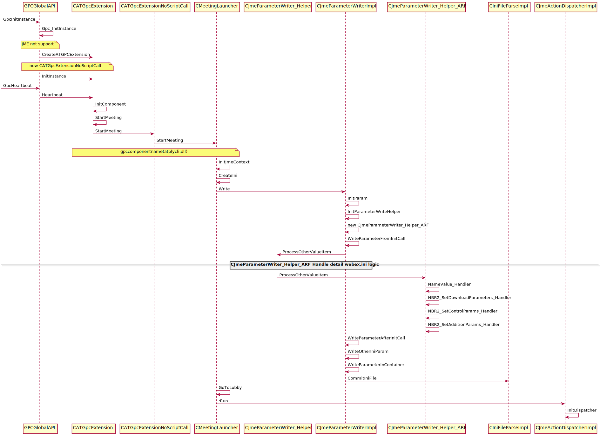

NBR Remove Script¶
webex.ini template¶
[WebEx]
urlroot=
localrootsectionver=
gpcextver=
gpcdecver=
downloadmsgtitle=
downloadlocalsetting=
ininame=
productroot=
skip_download=
HomePageURL=
PlaybackURL1=
PlaybackURL2=
PlaybackBrowser=
productname=
controltype=
Reserved0=
Reserved1=
Reserved2=
Reserved3=
Reserved4=
Reserved5=
Reserved6=
Reserved7=
Reserved8=
Reserved9=
Reserved10=
Reserved11=
[Vista]
sectionnameEX=
AppName_V=
AppPara_V="-Online C:\Users\Lamfung\AppData\LocalLow\WebEx\webex.ini"
[NameValue]
SFSupporting=
GpcMovingInSubdir=
ClientBuildVersion=
T29CryptoFlag=
EnableCertChecking=
ARF remove script sequence¶
GPC Parameters¶
gpccomponentname
gpcinitcall
gpcexitcall
- gpcactions
- GpcChangeLocation(szHomePage, szFrameName), Base64Decode(szhomepage), Base64Decode(szframename)
gpcerrorpageurl
szhomepage
szframename
- WebEx
- urlroot=[gpcurlroot], HardCode(urlroot)=NoneDecode(gpcurlroot)
- localrootsectionver=[gpcproductversion],HardCode(localrootsectionver)=NoneDecode(gpcproductversion)
- gpcextver=[gpcextversion],HardCode(gpcextver)=NoneDecode(gpcextversion)
- gpcdecver=[gpcunpackversion],HardCode(gpcdecver)=NoneDecode(gpcunpackversion)
- downloadmsgtitle=[gpcprogressbartitle],HardCode(downloadmsgtitle)=Base64Decode(gpcprogressbartitle)
- downloadlocalsetting=[gpclocalsetting],HardCode(downloadlocalsetting)=Base64Decode(gpclocalsetting)
- ininame=[gpcinifilename],HardCode(ininame)=Base64Decode(gpcinifilename)
- productroot=[gpcproductroot],HardCode(productroot)=NoneDecode(gpcproductroot)
- None (hard code), skip_download=IsVista()?0:1,HardCode(skip_download)=IsVista()?0:1
- HomePageURL=[homepageurl], HardCode(HomePageURL)=Base64Decode(homepageurl)
- PlaybackURL1=[playbackurl1], HardCode(PlaybackURL1)=Base64Decode(playbackurl1)
- PlaybackURL2=[playbackur2], HardCode(PlaybackURL2)=Base64Decode(playbackur2)
- PlaybackBrowser=[browsertype], HardCode(PlaybackBrowser)=Base64Decode(browsertype)
- None (hard code), HardCode(productname)=HardCode(nbrpl)
- controltype=[controltype], HardCode(controltype)=Base64Decode(controltype)
- Reserved0=[reserved0], HardCode(Reserved0)=Base64Decode(reserved0)
- Reserved1=[reserved1], HardCode(Reserved1)=Base64Decode(reserved1)
- Reserved2=[reserved2], HardCode(Reserved2)=Base64Decode(reserved2)
- Reserved3=[reserved3], HardCode(Reserved3)=Base64Decode(reserved3)
- Reserved4=[reserved4], HardCode(Reserved4)=Base64Decode(reserved4)
- Reserved5=[reserved5], HardCode(Reserved5)=Base64Decode(reserved5)
- Reserved6=[reserved6], HardCode(Reserved6)=Base64Decode(reserved6)
- Reserved7=[reserved7], HardCode(Reserved7)=Base64Decode(reserved7)
- Reserved8=[reserved8], HardCode(Reserved8)=Base64Decode(reserved8)
- Reserved9=[reserved9], HardCode(Reserved9)=Base64Decode(reserved9)
- Reserved10=[reserved10], HardCode(Reserved10)=Base64Decode(reserved10)
- Reserved11=[reserved11], HardCode(Reserved11)=Base64Decode(reserved11)
- Vista
- None (hard code), HardCode(sectionnameEX)=HardCode(WebEx_V)
- None (hard code), HardCode(AppName_V)=HardCode(webex\500\nbrplay.exe)
- None (hard code), HardCode(AppPara_V)=”-Online WebExIniFileFullPath”
- NameValue
- [paramname0]=[paramvalue0], Base64Decode(paramname0)=Base64Decode(paramvalue0)
- [paramname1]=[paramvalue1], Base64Decode(paramname1)=Base64Decode(paramvalue1)
- [paramname2]=[paramvalue2], Base64Decode(paramname2)=Base64Decode(paramvalue2)
- [paramname3]=[paramvalue3], Base64Decode(paramname3)=Base64Decode(paramvalue3)
- [paramname4]=[paramvalue4], Base64Decode(paramname4)=Base64Decode(paramvalue4)
Script Execute Sequence¶
ExecuteScript:
szCookie = InitControl(%HWND);
NBR2_SetDownloadParameters(szCookie,GpcProductVersion,GpcUrlRoot,GpcExtVersion,GpcUnpackVersion,GpcProgressBarTitle,GpcIniFileName,GpcProductRoot,GpcLocalSetting);
NameValue(szCookie, ParamName0,ParamValue0);
NameValue(szCookie, ParamName1,ParamValue1);
NameValue(szCookie, ParamName2,ParamValue2);
NameValue(szCookie, ParamName3,ParamValue3);
NameValue(szCookie, ParamName4,ParamValue4);
NBR2_SetAdditionParams(szCookie,homepageURL,playbackURL1,playbackURL2,browserType,lpszReserved1,lpszReserved2,lpszReserved3);
NBR2_SetControlParams(szCookie,ControlType,Reserved0,Reserved1,Reserved2,Reserved3,Reserved4,Reserved5,Reserved6,Reserved7,Reserved8,Reserved9,Reserved10,Reserved11);
ExecuteScript:
GpcChangeLocation(szHomePage, szFrameName);
ExecuteScript:
ExitControl(szCookie);
atplycli.dll API¶
InitControl
ExitControl
- NBR2_SetControlParams
- Execute Script
- NBR2_SetControlParams(szCookie,ControlType,Reserved0,Reserved1,Reserved2,Reserved3,Reserved4,Reserved5,Reserved6,Reserved7,Reserved8,Reserved9,Reserved10,Reserved11);
- Write to webex.ini: [WebEx]
- productname=nbrpl
- controltype=[controltype]
- Reserved0=[reserved0]
- Reserved1=[reserved1]
- Reserved2=[reserved2]
- Reserved3=[reserved3]
- Reserved4=[reserved4]
- Reserved5=[reserved5]
- Reserved6=[reserved6]
- Reserved7=[reserved7]
- Reserved8=[reserved8]
- Reserved9=[reserved9]
- Reserved10=[reserved10]
- Reserved11=[reserved11]
- NBR2_SetDownloadParameters
- Execute Script
- NBR2_SetDownloadParameters(szCookie,GpcProductVersion,GpcUrlRoot,GpcExtVersion,GpcUnpackVersion,GpcProgressBarTitle,GpcIniFileName,GpcProductRoot,GpcLocalSetting)；
- SetDownloadParameters
WBXVoid WBXCallback NBR2_SetDownloadParameters(WBXLPCTSTR lpszCookie, WBXLPCTSTR lpszLocalSecVer, WBXLPCTSTR lpszUrlRoot, WBXLPCTSTR lpszGpcExtVer, WBXLPCTSTR lpszGpcDecVer, WBXLPCTSTR lpszDownloadMsgTitle, WBXLPCTSTR lpszReserved1, WBXLPCTSTR lpszReserved2, WBXLPCTSTR lpszReserved3)
- Write to webex.ini: [WebEx]
- urlroot=[gpcurlroot]
- localrootsectionver=[gpcproductversion]
- gpcextver=[gpcextversion]
- gpcdecver=[gpcunpackversion]
- downloadmsgtitle=[gpcprogressbartitle]
- downloadlocalsetting=[gpclocalsetting]
- ininame=[gpcinifilename]
- productroot=[gpcproductroot]
- skip_download=IsVista()?0:1
- Write to webex.ini: [Vista]
- sectionnameEX= WebEx_V
- AppName_V= webex\500\nbrplay.exe
- AppPara_V=”-Online WebExIniFileFullPath”
- NBR2_SetAdditionParams
- Execute Script
- NBR2_SetAdditionParams(szCookie,homepageURL,playbackURL1,playbackURL2,browserType,lpszReserved1,lpszReserved2,lpszReserved3);
- Write to webex.in: [WebEx]
- HomePageURL=[homepageurl]
- PlaybackURL1=[playbackurl1]
- PlaybackURL2=[playbackur2]
- PlaybackBrowser=[browsertype]
NameValue
Code Change¶
- atgpcext_win.cpp
- GetServiceType()
- CATGpcExtension::InitComponent()
- JmeParameterWriterImpl.cpp
- CJmeParameterWriterImpl::InitParameterWriterHelper
- GPCParamUtil.cpp
- szPrecompatibleParams
WRF¶
- [gpccomponentname]=[QVRSQ1AuRExM]
- gpccomponentname, atrcp.dll
- [gpcactions]=[IEdwY0NoYW5nZUxvY2F0aW9uKHN6SG9tZVBhZ2UsIHN6RnJhbWVOYW1lKTt8IHwgfCB8IHwgfCB8IHwgfCB8IHwgfA==]
- GpcChangeLocation(szHomePage, szFrameName);| | | | | | | | | | | |
- [gpcinitcall]=[c3pDb29raWUgPSBJbml0Q29udHJvbF9BbGxJbk9uZSglSFdORCxHcGNMb2NhbFNldHRpbmcsQWxsSW5PbmVQYWNrYWdlRW5hYmxlKTtXZWJFeF9TZXRDb250cm9sVHlwZShzekNvb2tpZSxDb250cm9sVHlwZSxSZWNvcmRBZGRyZXNzKTs=]
szCookie = InitControl_AllInOne(%HWND,GpcLocalSetting,AllInOnePackageEnable);WebEx_SetControlType(szCookie,ControlType,RecordAddress);
- F6535 GPC Security - Remove Script Codes for SC,WRF,NBR
https://wiki.cisco.com/pages/viewpage.action?pageId=109437735
Test Case¶
ARF test case¶
Clean Package(gota70.eng.webex.com 32.10.0.142)
ARF Remove Script(Clean Package 32.10.0.142)¶ IE FireFox Chrome Edge Win7 IE9(9.0.8112.16421) FireFox(56.0.2) Chrome(63.0.3239.90) Win8.1 IE11(11.0.9600.18618) FireFox(56.0) Chrome(63.0.3239.84) Win10 IE11(11.64.16299.0) FireFox(57.0.1) Chrome(63.0.3239.84) Upgrade Package(cisco.webex.com 32.8.4.6=>32.10.0.142 gota70.eng.webex.com)
ARF Remove Script(32.8.4.6=>32.10.0.142)¶ IE FireFox Chrome Edge Win7 IE9(9.0.8112.16421) FireFox(56.0.2) Chrome(63.0.3239.90) Win8.1 IE11(11.0.9600.18618) FireFox(56.0) Chrome(63.0.3239.84) Win10 IE11(11.64.16299.0) FireFox(57.0.1) Chrome(63.0.3239.84)
CDECT Issue¶
- CSCvg08443, WRF Issue
- Created at 09/25/17 8:49
- Can’t online playback wrf file again with ActiveX after playback with Java download method
WRF test case¶
Clean Package(gota70.eng.webex.com 32.10.0.142)
WRF Remove Script(Clean Package 32.10.0.142)¶ IE FireFox Chrome Edge Win7 IE9(9.0.8112.16421) FireFox(56.0.2) Chrome(63.0.3239.90) Win8.1 IE11(11.0.9600.18618) FireFox(56.0) Chrome(63.0.3239.84) Win10 IE11(11.64.16299.0) FireFox(57.0.1) Chrome(63.0.3239.84) Upgrade Package(cisco.webex.com 32.8.4.6=>32.10.0.142 gota70.eng.webex.com)
WRF Remove Script(32.8.4.6=>32.10.0.142)¶ IE FireFox Chrome Edge Win7 IE9(9.0.8112.16421) FireFox(56.0.2) Chrome(63.0.3239.90) Win8.1 IE11(11.0.9600.18618) FireFox(56.0) Chrome(63.0.3239.84) Win10 IE11(11.64.16299.0) FireFox(57.0.1) Chrome(63.0.3239.84)